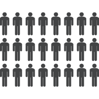
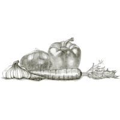

Employment Projects
Our community employment project is designed to help people who are long-term unemployed and other disadvantaged people to get back to work by offering part-time and full-time placements. We work hard to promote integration amongst people with different abilities both at the workplace and outside. Since the beginning we have been promoting a committed and supportive model of social coexistence, improving people's quality of life and helping to bring about the social integration of groups that are most disadvantaged or most at risk of exclusion.

Local Produce
We work closely with local farmer’s to provide only free-range and organic produce in our café and diner. All of our freshly baked goods are also produced locally. If you’d like to meet our local suppliers in person then come by at the weekend as every Saturday we host a Farmer’s Market with stalls showcasing a wealth of local and artisan produce from local farmer’s and suppliers.

Supporting Cyclists
Our Get On Your Bike project has been a great success. We love to cycle and would like to help you get back on two wheels. We’ve teamed up with our local mountain-biking club to help them stay on track. We’re strong supporters of the cycle to work scheme and our team of cyclists will take good care of you at our bicycle service station for a quick-fix to deal with any unexpected problems. Check out our sheltered bicycle parking for when you want to take a break from the road.